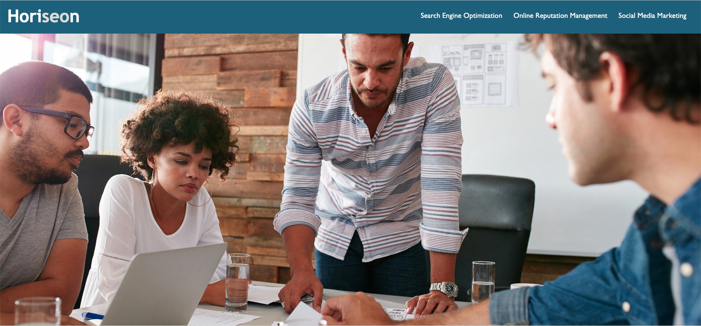

About William
Thanks for visiting my portfolio page! I'm a seasoned professional in both Finance & Asset Management as well as Project Management. In previous roles I developed an interest and showed an aptitude for technology services and especially coding. Those experiences brought me to enroll in a web development Bootcamp with UC Berkeley Extension in the fall of 2022 and I am currently expanding my skillset as a full stack engineer.
Outside of work I have a passion for the outdoors and the ocean. I love to surf, trail run, and take photos of natural landscapes. This page will give you sense of projects I have completed or collaborated on. Click on the Portfolio link for more!
Portfolio
Horiseon Refactoring Project
Prework Study Guide

Rock Paper Scissors

Contact Me
- Email: altbcodes@gmail.com
- Phone: 415-720-9412